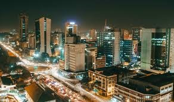

Nairobi
Nairobi is the capital and the largest city of Kenya. The name comes from the Maasai phrase Enkare Nairobi, which translates to "cool water", a reference to the Nairobi River which flows through the city. The city proper had a population of 4,397,073 in the 2019 census, while the metropolitan area has a population of 9,354,580. The city is popularly referred to as the Green City in the Sun.
History
Nairobi was founded in 1899 by the colonial authorities in British East Africa, as a rail depot on the Uganda Railway. The town quickly grew to replace Mombasa as the capital of Kenya in 1907. After independence in 1963, Nairobi became the capital of the Republic of Kenya. During Kenya's colonial period, the city became a centre for the colony's coffee, tea and sisal industry.The city lies in the south central part of Kenya, at an elevation of 1,795 metres (5,889 ft). Home to thousands of Kenyan businesses and over 100 major international companies and organizations, including the United Nations Environment Programme (UN Environment) and the United Nations Office at Nairobi (UNON), Nairobi is an established hub for business and culture. The Nairobi Securities Exchange (NSE) is one of the largest in Africa and the second-oldest exchange on the continent. It is Africa's fourth-largest exchange in terms of trading volume, capable of making 10 million trades a day. It also has the Nairobi National Park with a large game reserve.

Demographics
Nairobi was founded in 1899 by the colonial authorities in British East Africa, as a rail depot on the Uganda Railway. The town quickly grew to replace Mombasa as the capital of Kenya in 1907. After independence in 1963, Nairobi became the capital of the Republic of Kenya. During Kenya's colonial period, the city became a centre for the colony's coffee, tea and sisal industry.The city lies in the south central part of Kenya, at an elevation of 1,795 metres (5,889 ft). Home to thousands of Kenyan businesses and over 100 major international companies and organizations, including the United Nations Environment Programme (UN Environment) and the United Nations Office at Nairobi (UNON), Nairobi is an established hub for business and culture. The Nairobi Securities Exchange (NSE) is one of the largest in Africa and the second-oldest exchange on the continent. It is Africa's fourth-largest exchange in terms of trading volume, capable of making 10 million trades a day. It also has the Nairobi National Park with a large game reserve.
Cuisine
In Nairobi, there are a range of restaurants and, besides being home to nyama choma which is a local term used to refer to roasted meat, there are American fast food restaurants such as KFC, Subway, Domino's Pizza, Pizza Hut, Hardee's and Burger King which are popular, and the longer established South African chains, Galittos, Steers, PizzaMojo, Spur Steak Ranches. Coffee houses, doubling up as restaurants, mostly frequented by the upper middle classes, such as Artcaffe, Nairobi Java House and Dormans have become increasingly popular in recent days. Traditional food joints such as the popular K'osewe's in the city centre and Amaica, which specialize in African delicacies, are also widespread. The Kenchic franchise which specialized in old-school chicken and chips meals was also popular, particularly among the lower classes and students, with restaurants all over the city and its suburbs. However, as of February 2016, Kenchic stopped operating its eatery business. Upscale restaurants often specialize in specific cuisines such as Italian, Lebanese, Ethiopian, French, but are more likely to be found in five star hotels and the wealthier suburbs in the West and South of the city.Nairobi has an annual restaurant week (NRW) at the beginning of the year, January–February. Nairobi's restaurants offer dining packages at reduced prices. NRW is managed by Eatout Kenya which is an online platform that lists and reviews restaurants in Nairobi, and provides a platform for Kenyan foodies to congregate and share.